２０日目(9/23)～メトロポリスへ～
toVancouver
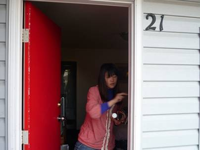
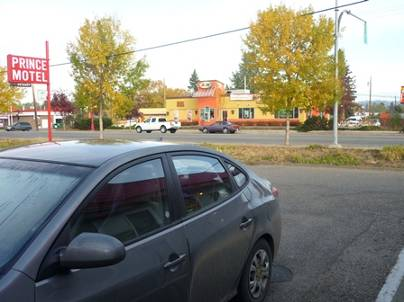
約7000kmの行程を走破してきた車での旅は、いよいよクライマックスを迎える。いよいよカナダ第三の都市、バンクーバーへと戻る日がやってきた。
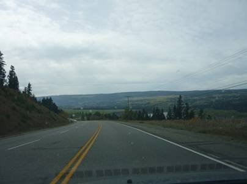
こののどかなカナダの田舎風景も見納めになってしまうと思うと、名残惜しい思いがこみ上げてくる。
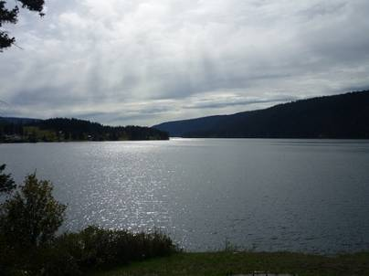
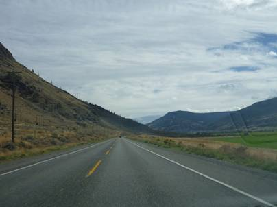
カナダを走っていて思うのは、非常に湖が多いということだ。イエローナイフ近くのグレートスレーブ湖や、さらに北のグレートベア湖という巨大な湖だけでなく、特に北部は大小様々な湖の点在する湖水地域となっている。プリンスジョージの町からひたすら南下していくと、カムループス方面への分岐の街となるCache Creek近郊で木々がまばらなはげ山ばかりの風景が目立つようになった。そこまで雨が降らない地域とは思えないが、どうしてこのようにはげ山ばかりになってしまったのだろうか？
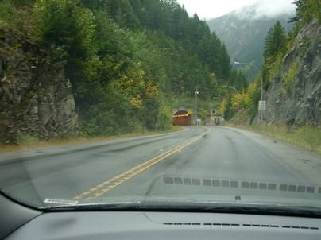
Cache
Creekより南のトランスカナダハイウェイ1号線は予想とは正反対の山間の道。カナダではほとんど見ることの無いトンネルも多く見られた。
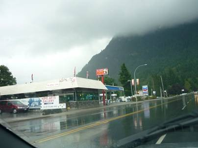
どんどんバンクーバーへと近づいていく。Hopeの街では去年の旅で、Jeepが突然異音を発し液体を噴いたガソリンスタンドを通過した。幸いにも、今回の旅では事故どころか車を擦ってしまうこともなければ、故障も起きていない。何とかこのまま無事にシアトルへと戻り、最後には車へのお礼も兼ねて洗車機で綺麗に洗ってやりたい。
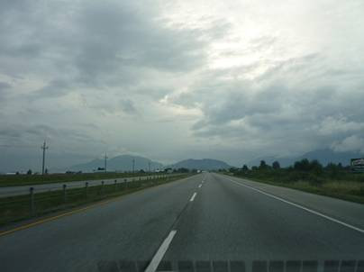
さらにバンクーバーへと車を走らせると、カムループス方面から伸びてきた5号線と合流する。途端に道は良くなり、平原地域となる。Abbotsfordなどの街はもうすでに都会を感じさせる。やがて、摩天楼、バンクーバー市街が見えてきた。
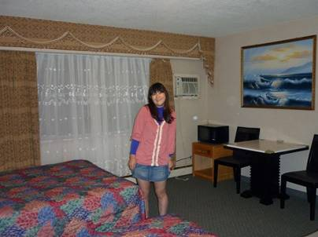
バンクーバー市街からは少し離れたKingsway沿いのPalms Motelへ。このモーテルはそれまでの宿とは全く雰囲気を異にしていた。どことなく中国っぽい雰囲気を感じさせる内装で、フロントの店員もアジア系だった。そして、この宿の周辺は中国語や韓国語で書かれたお店がずらりと並んでいた。カナダにいるのかどうかを不安にさせるような町並みだ。
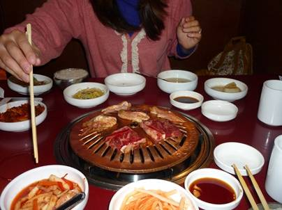
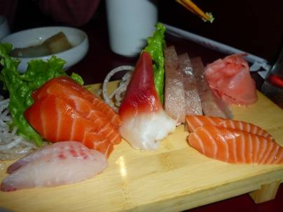
バンクーバーに着くまでは何度も財布の中身をチェックし、財政難にならないように気を付け、節約を続けてきた。バンクーバーでは相当宿泊代が高くなってしまうと予想していたからだ。ところが、Palms Motelの宿泊費は予想を遥かに下回る一泊１００ドル以下。相当な額のお金が余ることになり、途端に僕らの気は大きくなった。これまで特に食費を削って来た為、今日は豪華に韓国焼肉のお店へ。店内はアジア系の客ばかりで、焼肉は行った事はないが韓国の本場さながらなのだろう。キムチもおいしく、なぜか日本の刺身をメニューに載っていたので注文。最高の晩餐となった。